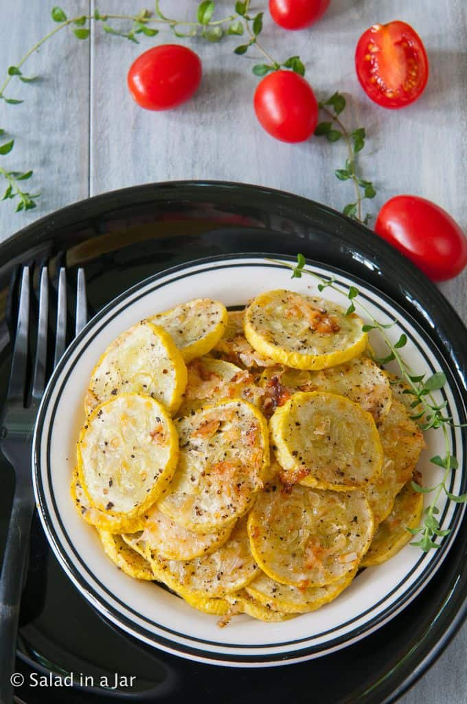

Easy Baked Squash

This baked squash is so easy and it tastes grest! Heres the ingredients list:
- 1 Squash
- Olive oil
- Garlic salt
Instructions:
- Slice the squash into slices 1/4 inch thick
- Toss the slices in olive oil
- place slices on pan
- Sprinkle a liberal amount of garlic salt on the slices of squash
- Bake at 400 for 20 minutes or untill edges are crispy